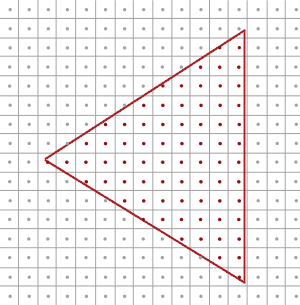

原文连接:https://www.cnblogs.com/chaogex/p/12003722.html
大家好，本文学习MSAA以及在WebGPU中的实现。
上一篇博文
WebGPU学习（二）: 学习“绘制一个三角形”示例
下一篇博文
WebGPU学习（四）:Alpha To Coverage
学习MSAA
介绍
MSAA（多重采样抗锯齿），是硬件实现的抗锯齿技术
动机
参考深入剖析MSAA ：
具体到实时渲染领域中，走样有以下三种：
1.几何体走样（几何物体的边缘有锯齿），几何走样由于对几何边缘采样不足导致。
2.着色走样，由于对着色器中着色公式（渲染方程）采样不足导致。比较明显的现象就是高光闪烁。
3.时间走样，主要是对高速运动的物体采样不足导致。比如游戏中播放的动画发生跳变等。
这里讨论几何体走样。

如上图所示，我们要绘制一个三角形。它由三个顶点组成，红线范围内的三角形是片元primitive覆盖的区域。
primitive会被光栅化为fragment，而一个fragment最终对应屏幕上的一个像素，如图中的小方块所示。
gpu会根据像素中心的采样点是否被pritimive覆盖来判断是否生成该fragment和执行对应的fragment shader。
图中红色的点是被覆盖的采样点，它所在的像素会被渲染。
下图是最终渲染的结果，我们看到三角形边缘产生了锯齿：

原理
MSAA通过增加采样点来减轻几何体走样。
它包括4个步骤：
1.针对采样点进行覆盖检测
2.每个被覆盖的fragment执行一次fragment shader
3.针对采样点进行深度检测和模版检测
4.解析（resolve）
下面以4X MSAA为例（每个像素有4个采样点），说明每个步骤：
1.针对采样点进行覆盖检测
gpu会计算每个fragment的coverage（覆盖率），从而得知对应像素的每个采样点是否被覆盖的信息。
coverage相关知识可以参考WebGPU学习（四）:Alpha To Coverage -> 学习Alpha To Coverage -> 原理
这里为了简化，我们只考虑通过“检测每个像素有哪些采样点被primitive覆盖”来计算coverager：

如上图所示，蓝色的采样点是在三角形中，是被覆盖的采样点。
2.每个被覆盖的fragment执行一次fragment shader
如果一个像素至少有一个采样点被覆盖，那么会执行一次它对应的fragment（注意，只执行一次哈，不是执行4次）（它所有的输入varying变量都是针对其像素中心点而言的，所以计算的输出的颜色始终是针对该栅格化出的像素中心点而言的），输出的颜色保存在color buffer中（覆盖的采样点都要保存同一个输出的颜色）
3.针对采样点进行深度检测和模版检测
所有采样点的深度值和模版值都要存到depth buffer和stencil buffer中（无论是否被覆盖）。
被覆盖的采样点会进行深度检测和模版检测，通过了的采样点会进入“解析”步骤。
那为什么要保存所有采样点的深度和模版值了（包括没有被覆盖的）？因为它们在深度检测和模版检测阶段决定所在的fragment是否被丢弃：
那是因为之后需要每个sample（采样点）都执行一下depth-test，以确定整个fragment是否要流向（通往缓冲区输出的）流水线下一阶段——只有当全部fragment-sample的Depth-Test都Fail掉的时候，才决定抛弃掉这个fragment（蒙版值stencil也是这样的，每个sample都得进行Stencil-Test）。
4.解析
什么是解析？
根据深入剖析MSAA 的说法：
像超采样一样，过采样的信号必须重新采样到指定的分辨率，这样我们才可以显示它。
这个过程叫解析（resolving）。
根据乱弹纪录II:Alpha To Coverage 的说法：
在把所有像素输出到渲染缓冲区前执行Resolve以生成单一像素值。
。。。。。。
也该是时候谈到一直说的“计算输出的颜色”是怎么一回事了。MultiSample的Resolve阶段，如果是屏幕输出的话这个阶段会发生在设备的屏幕输出直前；如果是FBO输出，则是发生在把这个Multisample-FBO映射到非multisample的FBO（或屏幕）的时候（见[多重采样(MultiSample)下的FBO反锯齿] ）。Resolve，说白了就是把MultiSample的存储区域的数据，根据一定法则映射到可以用于显示的Buffer上了（这里的输出缓冲区包括了Color、Depth或还有Stencil这几个）。Depth和Stencil前面已经提及了法则了，Color方面其实也简单，一般的显卡的默认处理就是把sample的color取平均了。注意，因为depth-test等Test以及Coverage mask的影响下，有些sample是不参与计算的（被摒弃），例如4XMSAA下上面的0101，就只有两个sample，又已知各sample都对应的只是同一个颜色值，所以输出的颜色 = 2 * fragment color / 4 = 0.5 * fragment color。也就是是说该fragemnt最终显示到屏幕（或Non-MS-FBO）上是fragment shader计算出的color值的一半——这不仅是颜色亮度减半还包括真·透明度值的减半。
我的理解：
“解析”是把每个像素经过上述步骤得到的采样点的颜色值，取平均值，得到这个像素的颜色值。

如上图右边所示，像素的2个采样点进入了“解析”，最终该像素的颜色值为 0.5（2/4） * 原始颜色值
经过上述所有步骤后，最终的渲染结果如下：

总结
MSAA能减轻几何体走样，但会增加color buffer、depth buffer、stencil buffer开销。
参考资料
深入剖析MSAA
乱弹纪录II:Alpha To Coverage
Anti Aliasing
WebGPU实现MSAA
有下面几个要点：
- 能够查询最大的采样个数sample count
目前我没找到查询的方法，但至少支持4个采样点
参考 Investigation: Multisampled Render Targets and Resolve Operations：
We can say that 4xMSAA is guaranteed on all WebGPU implementations, and we need to provide APIs for queries on whether we can create a multisampled texture with given format and sample count.
- 设置sample count
dictionary GPURenderPipelineDescriptor : GPUPipelineDescriptorBase {
...
unsigned long sampleCount = 1;
...
};dictionary GPUTextureDescriptor : GPUObjectDescriptorBase {
...
unsigned long sampleCount = 1;
...
};我们在WebGPU 规范中看到render pipeline descriptor和texture descriptor可以设置sampleCount。
- 设置resolveTarget
在“解析”步骤中，需要重新采样到指定的分辨率：
过采样的信号必须重新采样到指定的分辨率，这样我们才可以显示它
所以我们应该设置color的resolveTarget（depth、stencil不支持resolveTarget），它包含“分辨率”的信息。
我们来看下WebGPU 规范：
dictionary GPURenderPassColorAttachmentDescriptor {
required GPUTextureView attachment;
GPUTextureView resolveTarget;
required (GPULoadOp or GPUColor) loadValue;
GPUStoreOp storeOp = "store";
};resolveTarget在render pass colorAttachment descriptor中设置，它的类型是GPUTextureView。
而GPUTextureView是从GPUTexture得来的，我们来看下GPUTexture的descriptor的定义：
dictionary GPUExtent3DDict {
required unsigned long width;
required unsigned long height;
required unsigned long depth;
};
typedef (sequence<unsigned long> or GPUExtent3DDict) GPUExtent3D;
dictionary GPUTextureDescriptor : GPUObjectDescriptorBase {
...
required GPUExtent3D size;
...
};GPUTextureDescriptor的size属性有width和height属性，只要texture对应了屏幕大小，我们就能获得屏幕“分辨率”的信息（depth设为1，因为分辨率只有宽、高，没有深度）。
实现sample
我们对应到sample来看下。
打开webgpu-samplers->helloTriangleMSAA.ts文件。
代码基本上与我们上篇文章学习的webgpu-samplers->helloTriangle.ts差不多，
我们看下创建render pipeline代码
const sampleCount = 4;
const pipeline = device.createRenderPipeline({
...
sampleCount,
});这里设置了sample count为4
我们看下frame函数->render pass descrptor代码
const renderPassDescriptor: GPURenderPassDescriptor = {
colorAttachments: [{
attachment: attachment,
resolveTarget: swapChain.getCurrentTexture().createView(),
...
}],
};- 设置attachment为多重采样的texture的view
该texture的创建代码为：
const texture = device.createTexture({
size: {
width: canvas.width,
height: canvas.height,
depth: 1,
},
sampleCount,
format: swapChainFormat,
usage: GPUTextureUsage.OUTPUT_ATTACHMENT,
});
const attachment = texture.createView();注意：texture的sampleCount应该与render pipeline的sampleCount一样，都是4
- 设置resolveTarget为swapChain对应的view
swapChain.getCurrentTexture()获得的texture的大小是与屏幕相同，所以它包含了屏幕分辨率的信息。
参考资料
helloTriangleMSAA.ts
Investigation: Multisampled Render Targets and Resolve Operations